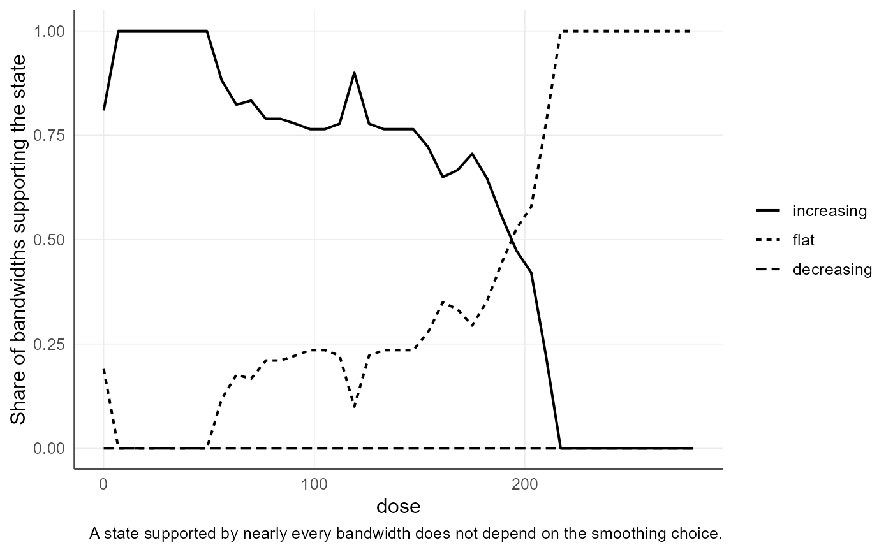

Significant zero crossings of the derivative
agri_np_sizer.RdClassifies the slope of the fitted response as significantly increasing, indistinguishable from zero, or significantly decreasing, at every position of the gradient and across a range of smoothing bandwidths.
Arguments
- object
An
agri_np_reg_fit, or a numeric vector of predictor values.- y
Response values when
objectis a numeric vector.- predictor
Focal numeric predictor when
objectis a fit.- bandwidths
Vector of bandwidths, on the scale of the predictor. Chosen from the data range when
NULL.- n_grid
Number of positions along the gradient.
- derivative
Order of the derivative to classify, 1 or 2.
- reference_bandwidth
Bandwidth used for the summary table.
- stability
Minimum share of bandwidths that must agree on a state for it to be reported.
- x
An
agri_np_sizerobject.- type
"map"for the SiZer map,"stability"for the share of bandwidths supporting each state.- ...
Passed to
agri_np_sizer()when a fit is supplied.
Details
agri_np_optimum answers a narrow question: where is the maximum of
this particular smooth. It does not answer the question a grower asks, which is
from which rate on there is no longer evidence that yield still rises. The two
differ because a single smooth depends on one bandwidth, and the estimated
optimum moves when the bandwidth moves.
SiZer removes that dependence by classifying the sign of the derivative across a whole column of bandwidths. A conclusion that survives every reasonable amount of smoothing is defensible; one that appears at a single bandwidth is not.
agri_np_significant_slope() reduces the map to the statement it supports:
the interval over which the response increases and the position from which it
stops increasing, using only positions where a stated share of bandwidths agree.
Bandwidths are reported on the scale of the predictor, so for a nitrogen gradient they are in kg ha\(^{-1}\) and can be judged agronomically.
The method describes a continuous gradient. For an integer decision support the
function refuses and points to agri_integer_difference, because a
derivative is not an admissible quantity between whole plants.
Value
agri_np_sizer() returns an object of class agri_np_sizer with the
map in long format, a run-length summary at the reference bandwidth, and the
share of bandwidths supporting each state at every position.
agri_np_significant_slope() returns a one-row data frame.
plot() returns a ggplot.
References
Chaudhuri, P. and Marron, J. S. (1999). SiZer for exploration of structures in curves. Journal of the American Statistical Association, 94(447), 807-823. doi:10.1080/01621459.1999.10474186
Sonderegger, D. SiZer: Significant Zero Crossings. CRAN.
Examples
data(agri_dose)
f <- agri_np_regression(yield ~ dose, agri_dose, method = "smoothing_spline")
# Example 1: where is the nitrogen response still rising?
if (requireNamespace("SiZer", quietly = TRUE)) {
sz <- agri_np_sizer(f)
sz
}
#> agriRank SiZer map
#> Predictor: dose Response: yield n = 40
#> Derivative order: 1
#> Bandwidths: 21 from 11.2 to 140
#> Reference bandwidth: 39.6
#>
#> Slope classification at the reference bandwidth:
#> from to state n_grid bandwidth
#> 0 182 increasing 27 39.6
#> 189 280 flat 14 39.6
#>
#> A conclusion that holds across the whole bandwidth column is robust to
#> the amount of smoothing; one that appears at a single bandwidth is not.
# Example 2: the agronomic statement, robust to the smoothing choice
if (requireNamespace("SiZer", quietly = TRUE)) {
agri_np_significant_slope(sz)
# Compare with the pointwise optimum, which sits at the boundary of the
# tested range. The optimum answers a different, weaker question.
agri_np_optimum(f)
}
#> predictor optimum fitted_response objective at_boundary support
#> 1 dose 280 5.413311 max TRUE continuous
# Example 3: the map and the stability profile
if (requireNamespace("SiZer", quietly = TRUE) &&
requireNamespace("ggplot2", quietly = TRUE)) {
plot(sz, type = "map")
plot(sz, type = "stability")
}

# Example 4: curvature instead of slope
if (requireNamespace("SiZer", quietly = TRUE)) {
summary(agri_np_sizer(f, derivative = 2))
}
#> from to state n_grid bandwidth
#> 1 0 280 flat 41 39.59798
# Example 5: an integer decision support is refused, with the alternative named
data(agri_density)
fi <- agri_np_regression(yield ~ plants, agri_density, method = "integer_grid",
integer_base_method = "smoothing_spline",
predictor_support = "observed_integer")
if (requireNamespace("SiZer", quietly = TRUE)) try(agri_np_sizer(fi))
#> Error : SiZer describes the derivative of a continuous gradient. For an integer decision support use agri_integer_difference(), which reports finite differences between admissible decisions.